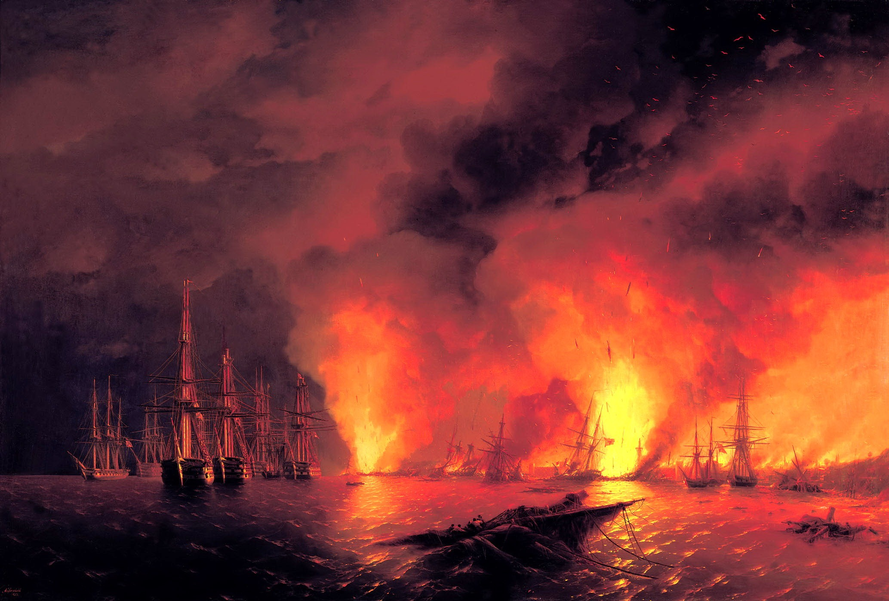

Синопский бой - Иван Айвазовский
Описание картины "Синопский бой":
В творчестве Ивана Айвазовского значимое место занимают картины на тему морских сражений и побед русского флота. Художник вёл своеобразную летопись исторических событий, начиная со времён Петра I и заканчивая сражениями в Крымской войне 1853-1856 годов и освобождения Балкан в русско-турецкой войне 1877-1878 годов. Айвазовский был современником многих боёв, которые впоследствии изображал на своих полотнах. С 1844 года он был назначен художником Главного Морского штаба. Картина «Синопский бой (ночью)» отражает события Крымской войны 1853-1856 гг., когда 18 ноября 1853 года состоялось морское сражение в Синопской бухте между турецкой и русской эскадрами. Русская эскадра, во главе с вице-адмиралом П.С. Нахимовым обнаружила турецкие корабли, и заблокировали их в бухте.
Итогом сражения стало полное уничтожение турецкого флота. Узнав о Синопском сражении, Айвазовский сразу же начал узнавать у участников битвы подробности. Айвазовский написал две картины, посвящённые Синопскому бою днём и ночью, которые были представлены на выставке в Севастополе. Это были картины «Морское сражение при Синопе 18-го ноября 1853 года» и «Синопский бой (ночью)». Картина «Синопский бой (ночью)» сразу привлекает взгляд своим необычным для морской тематики колоритом. Картина словно озарена вспышками красного цвета. Художник изобразил момент, когда турецкая эскадра полностью разгромлена и обломки вражеских кораблей догорают, поверженные от залпов русского флота, освещая огнём всё окружение. Русские боевые корабли спокойно и торжественно шествуют по ровной морской глади. В небо поднимаются клубы дыма, подсвеченные светом огня. Общий колорит картины состоит из чёрного и красного цветов, которые словно делят пространство на полотне. Несмотря на победу русского флота, любое сражение это трагическое событие, несущее смерти людей. И такое цветовое решение композиции картины насыщает её этой трагичностью и драматизмом.
Больше информации о картине...